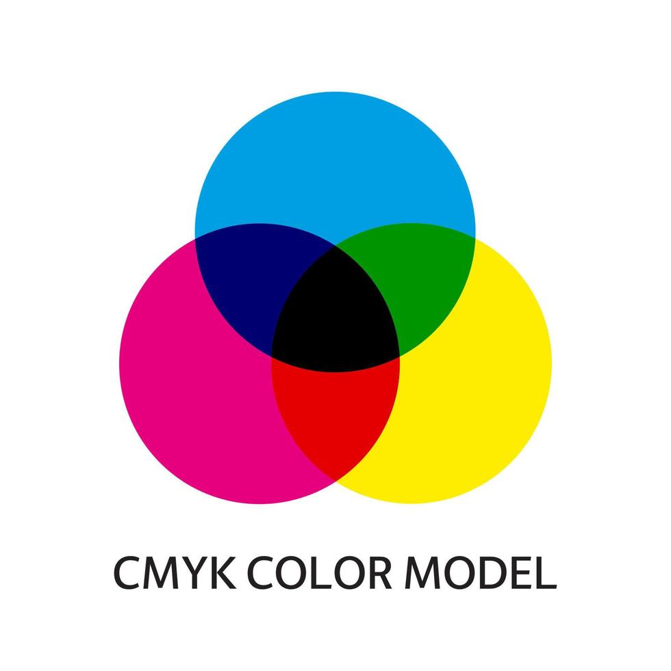

Een kleurmodel maakt kleuren met een paar basiskleuren. Beeldschermen gebruiken rood, groen en blauw licht, dat heet RGB.

Printers gebruiken juist inkt: cyaan, magenta, geel en zwart, dat heet CMYK.